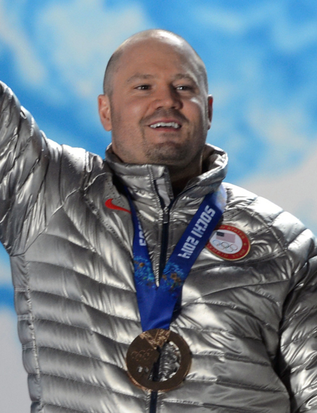
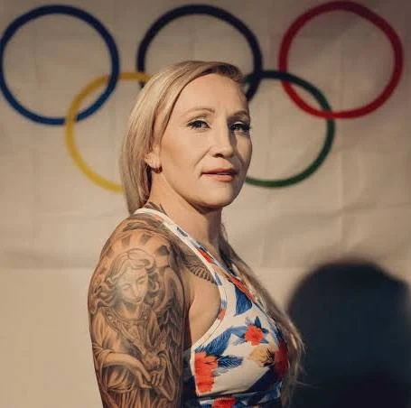
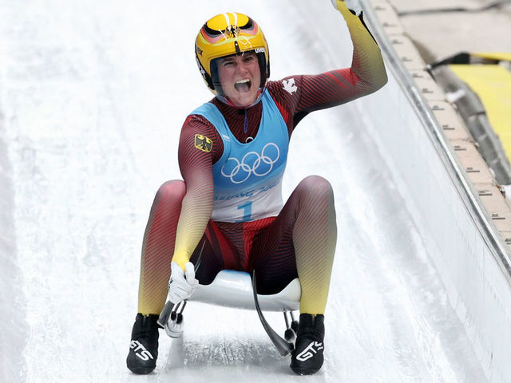
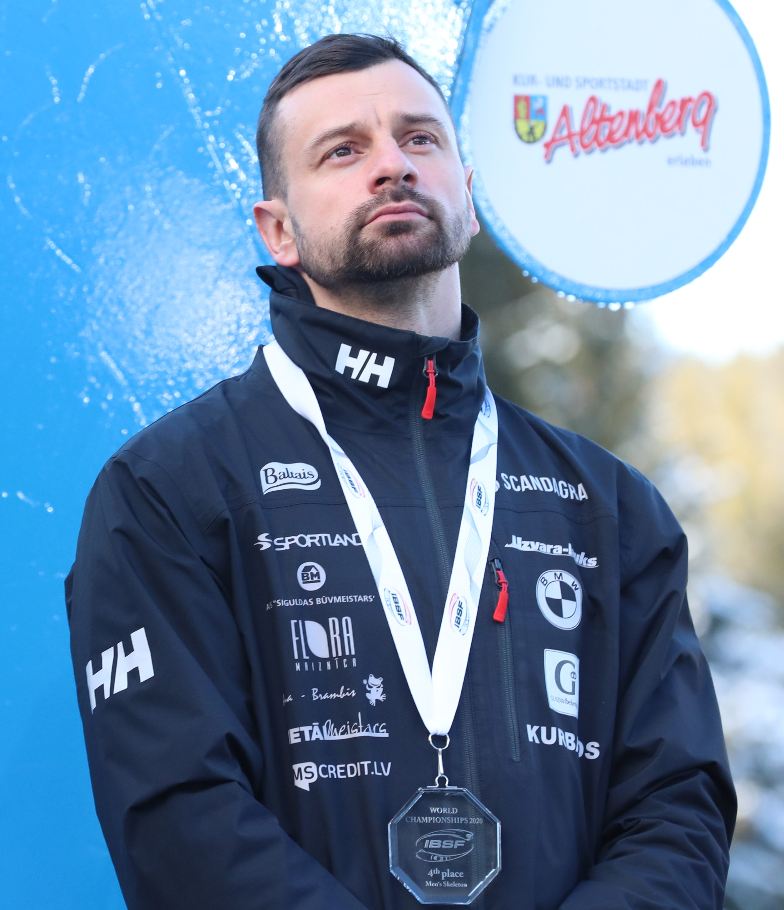
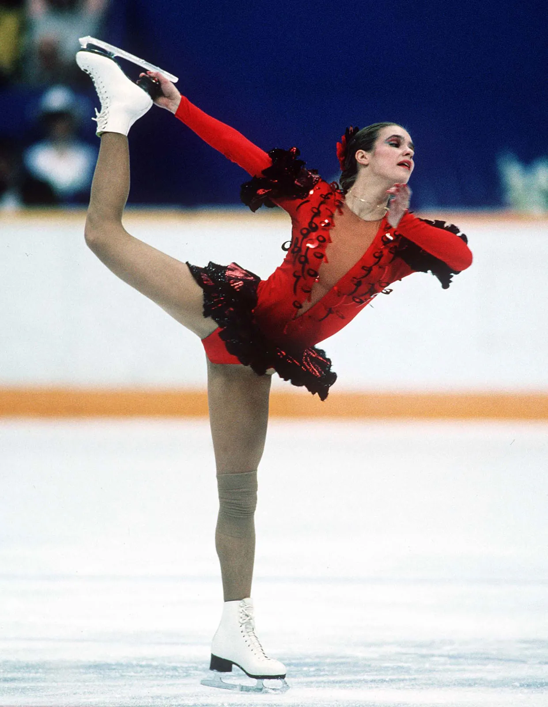

Francesco Friedrich 🇩🇪 est considéré comme l’un des plus grands pilotes de bobsleigh de l’histoire.
Originaire d’Allemagne, il domine la discipline depuis les années 2010 avec une régularité impressionnante.
Il a remporté plusieurs titres olympiques ainsi que de nombreux championnats du monde. Sa précision dans les
trajectoires et sa capacité à optimiser chaque descente font de lui une référence incontournable du bobsleigh moderne.

Steven Holcomb
Steven Holcomb 🇺🇸 est une figure emblématique du bobsleigh américain. Il est entré dans l’histoire en remportant
la médaille d’or aux Jeux Olympiques de Vancouver en 2010, mettant fin à une longue période sans victoire des
États-Unis dans cette discipline. Connu pour sa détermination et son mental exceptionnel, il a marqué les esprits
par son parcours et son leadership au sein de son équipe.

Kaillie Humphries
Kaillie Humphries 🇨🇦 / 🇺🇸 est l’une des plus grandes athlètes de l’histoire du bobsleigh féminin. Née au Canada puis
naturalisée américaine, elle a remporté plusieurs titres olympiques et mondiaux. Elle a contribué à faire évoluer
la place des femmes dans ce sport et reste un modèle de puissance et de détermination.
Felix Loch 🇩🇪 est l’un des meilleurs lugeurs de tous les temps. Triple champion olympique, il s’est imposé comme une référence grâce à sa précision technique et sa capacité à performer sous pression. Sa carrière est marquée par une grande régularité au plus haut niveau.
Armin Zöggeler
Armin Zöggeler 🇮🇹 est une véritable légende de la luge. Il a remporté une médaille lors de six Jeux Olympiques consécutifs, un exploit unique. Surnommé "le Cannibale", il est reconnu pour sa longévité exceptionnelle et son incroyable constance.

Natalie Geisenberger
Natalie Geisenberger 🇩🇪r domine la luge féminine depuis plusieurs années. Multiple championne olympique, elle impressionne par sa maîtrise technique et sa capacité à enchaîner les performances de haut niveau.
Lizzy Yarnold 🇬🇧 est l’une des athlètes les plus dominantes de l’histoire du skeleton féminin. Double championne olympique, elle s’est distinguée par sa capacité à performer dans les moments clés. Son mental et sa rigueur ont largement contribué à son succès.
Alexander Tretiakov
Alexander Tretiakov 🇷🇺 est un athlète russe reconnu pour ses départs explosifs et sa vitesse. Champion olympique, il a joué un rôle majeur dans le développement du skeleton au niveau international.

Martin Dukurs
Martin Dukurs 🇱🇻 est considéré comme l’un des plus grands spécialistes du skeleton. Avec de nombreux titres mondiaux, il a dominé la discipline pendant de nombreuses années grâce à sa régularité et sa technique.
Yuzuru Hanyu 🇯🇵 est une véritable icône du patinage artistique. Double champion olympique, il est célèbre pour son élégance, sa musicalité et sa technique exceptionnelle. Il a révolutionné la discipline avec des programmes innovants et très exigeants.
Nathan Chen
Nathan Chen 🇺🇸 est considéré comme l’un des patineurs les plus techniques de l’histoire. Champion olympique en 2022, il est connu pour ses sauts complexes et sa constance en compétition.

Katarina Witt
Katarina Witt 🇩🇪 est une figure emblématique du patinage artistique. Double championne olympique, elle a marqué son époque par son charisme et ses performances artistiques exceptionnelles.
Marit Bjørgen 🇳🇴 est l’athlète la plus médaillée de l’histoire des Jeux Olympiques d’hiver. Grâce à son endurance exceptionnelle et sa détermination, elle a dominé le ski de fond pendant plus d’une décennie.
Johannes Høsflot Klæbo
Johannes Høsflot Klæbo 🇳🇴 est la nouvelle star du ski de fond. Très jeune, il a déjà remporté plusieurs titres olympiques et mondiaux. Il est connu pour sa vitesse impressionnante et ses finishes explosifs.
Petter Northug
Petter Northug 🇳🇴 est l’un des athlètes les plus charismatiques du ski de fond. Connu pour ses fins de course spectaculaires et son style unique, il a marqué toute une génération.